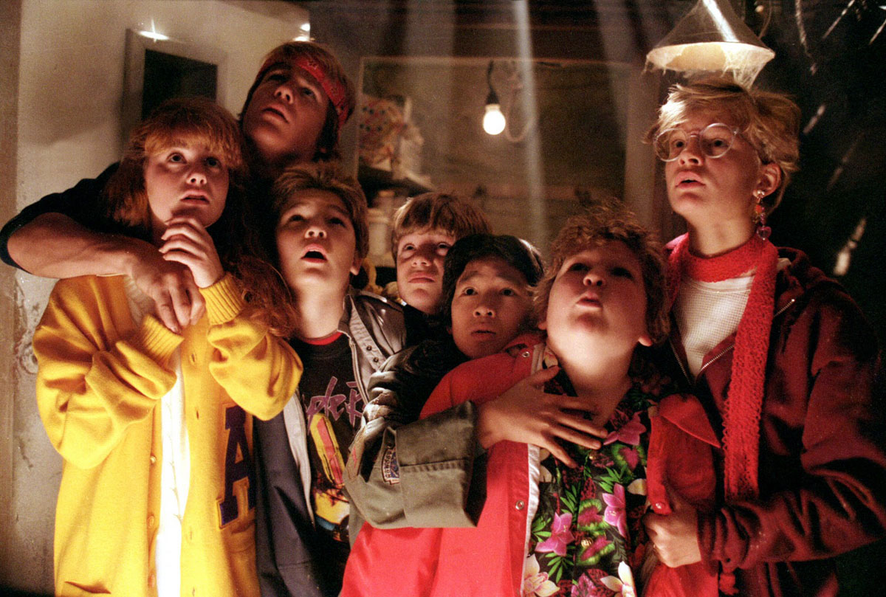
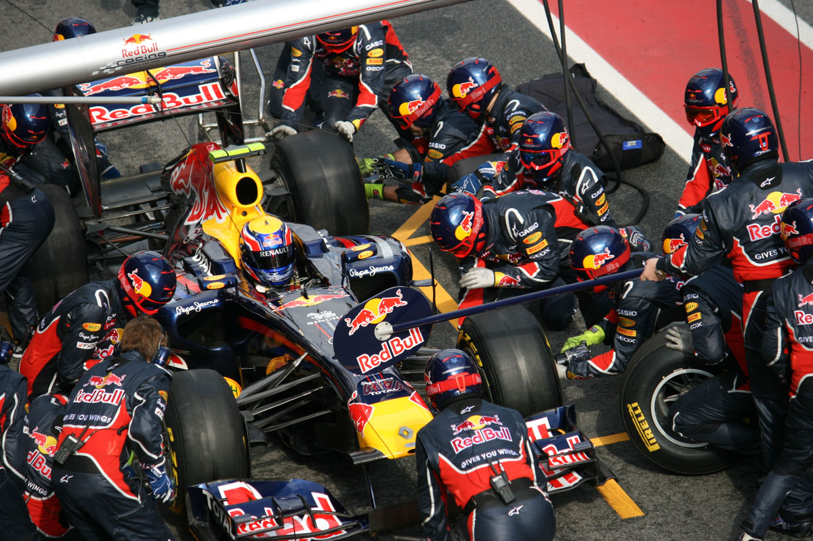

#Drupalcon
@WeAreGenuine
Team Success /
Michael Miles
How to Foster Team Success
events.drupal.org/node/17048
2017 Drupalcon Baltimore
#drupalcon
Mike Miles
Genuine (wearegenuine.com)
Dev(up); (developingup.com)
All the internet places: mikemiles86
Success?
Success?
End goal success is unique per team. However, the methods for reaching success are universal. Teams that are considered effective, can be considered successful.
Attributes of successful teams
- Deliver value
- Manage time
- Maximize skillsets
Four traits of effective team members.
- Communication
- Collaboration
- Positivity
- Responsibility
Who here wants their team to be successful?
You cannot change other people
You can inspire other people
Be the team member you want others to be.
You cannot force your team members to change and inherit these traits. But, you can demostrate their value and inspire your team to improve.
Communication
Effective communication
- Removes barriers between team members
- Prevents wasted time on miscommunication
- Allows for understanding goals
Example: Long haul flight crew
A long haul flight crew meet for the first time hours before a flight. They need to be able to quickly and clearly communicate with each other and with passengers. Time cannot be wasted on miscommunications. They are great at building an environment of clear, open communication. Skyfaring by Mark Vanhoenacker.
How to foster communication
- Be an Active Listener
- Ask questions
- Overcommunicate
Team members open up, listen and share.
As you build a safe environment for effective communication your team starts to truly listen to each other, share ideas, and work towards a common goal.
Collaboration
Effective collaboration
- Promotes sharing of ideas
- Reduces redundencies and duplication
- Allows skillsets to complement each other
The ATLAS Experiment
How to foster collaboration
- Share knowledge
- Create oppertunities
- Offer & ask for help
Team members solve problems together and share ideas
As you build an atmosphere of collaboration your team starts to work with each other instead of against or along side each other. Allowing them to accomplish tasks greater than an individual can achieve.
Positivity
Effective positive mindset
- Reaffirms confidence
- Reduces animosity
- Keeps focus on goals
The Goonies
The goonies, a group of young kids trying to save their homes by locating a hidden pirate treasure. Along the way they face multiple obsticles; Murderous thieves, deadly booby-traps and impossible odds. However they never give up, "Goonies never say die.". They know that as a team they can beat any obsticle and succeed.
How to foster positivity
- Highlight accomplishments
- Keep a "can do" attitude
- Trust the team
Team members face challenges head on
As you promote a positive mindset within your team they start seeing challenges not as obsitcles but as oppertunities to accomplish great things.
Responsibility
Effective responsibility
- Affirms that every team member matters
- Promotes the goals of the team over the individual
- Shares successes and setbacks
Redbull F1 Racing Pit Crew
How to foster responsibility
- Adopt an ownership mindset
- Be accountable
- Share success
Team members believe the team is greater then the individual
As you foster responsibility within your team they begin to understand and believe that for the team to succeed each team member has to succeed.
Fostering team success by focusing on:
- Communication
- Collaboration
- Positivity
- Responsibility
Inspiration snowballs
Inspiration snowballs
When you embody the team member you want to see, you will inspire change within your team members. That inspiration grows and spreads among the team, allowing them to become successful.
Resources
Feedback
@mikemiles86
#drupalcon
Thank You!
Questions?